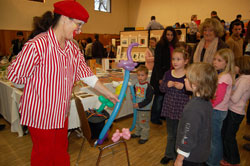

|
Freitag, 21. November 2008 |
Abwechslungsreicher Basar als Publikumsmagnet
12.000 Euro Erlös für Hilfsprojekt in Guatemala erzielt |
Der Herbstbasar der „terre des hommes“ Arbeitsgruppe Murgtal/Mittelbaden erwies sich am Sonntag einmal mehr als Besuchermagnet. Scharenweise kamen Jung und Alt aus dem gesamten Landkreis Rastatt und dem Stadtkreis Baden-Baden in die Kuppenheimer Wörtelhalle, um die Arbeitsgruppe der Kinderhilfsorganisation zu unterstützen und sich selbst eine kleine Freude zu bescheren.
Weiterlesen im Pressebericht |
Donnerstag, 13. November 2008 |
Welt-Finanzgipfel: terre des hommes und Global Policy Forum fordern demokratischen Umbau des Weltfinanzsystems
»Bundeskanzlerin darf sich nicht mit kosmetischen Reformen begnügen« |
Anlässlich des bevorstehenden Weltfinanzgipfels der G20 fordern das entwicklungspolitische Kinderhilfswerk terre des hommes und das Global Policy Forum von der Bundesregierung ein entschiedenes Eintreten für grundlegende und demokratische Reformen im internationalen Wirtschafts- und Finanzsystem. Die Finanzkrise zerstöre Jobs, gefährde Existenzen und verschärfe die Armut weltweit. Die Regierungen müssen aus dem Versagen der Märkte die Konsequenzen ziehen und in Washington einen umfassenden Reformprozess in Gang setzen.
»Kosmetische Reformen im Weltfinanzsystem und die baldige Rückkehr zur Tagesordnung würden dem Ausmaß der Krise nicht gerecht«, so Jens Martens vom Global Policy Forum, »Während milliardenschwere Rettungspakete für Banken und Fondsgesellschaften geschnürt werden, wären die Armen weltweit die größten Verlierer der Krise, wenn ihre Interessen nicht ausreichend berücksichtigt würden«. Die Organisationen fordern daher, die internationale Finanzarchitektur, ihre Institutionen und Regeln nicht nur im Kreis der G20 sondern auf einer zweiten UN-Konferenz über die internationale Zusammenarbeit in Finanz- und Währungsfragen einer grundlegenden Überprüfung zu unterziehen. Die erste derartige Konferenz hatte 1944 in Bretton Woods stattgefunden.
»Ein neues Weltfinanzsystem muss unter Mitwirkung aller UN-Mitgliedsstaaten entworfen werden, wenn es demokratisch legitimiert sein soll«, erklärte Dr. Klaus Schilder, terre des hommes-Referent für Entwicklungspolitik. »Statt exklusiver Kamingespräche einiger einflussreicher Staaten müssen alle Länder, die Parlamente, die Zivilgesellschaft und die Betroffenen selbst beteiligt werden«. Nötig seien die Regulierung von Derivaten und anderer spekulativer Finanzprodukte, die sofortige Schließung aller Steueroasen, eine Spekulationsteuer auf Devisen- und Finanztransaktionen sowie eine strengere Bankenaufsicht.
Insbesondere Kapitalflucht ist ein bislang erheblich unterschätztes Entwicklungshemmnis. Nach groben Schätzungen verlieren die Entwicklungsländer dadurch Jahr für Jahr mindestens 500 Milliarden US-Dollar - ein Vielfaches der jährlichen öffentlichen Entwicklungshilfe. Die Bundesregierung sollte sich daher für eine verstärkte internationale Kooperation in Steuerfragen unter dem Dach der Vereinten Nationen einsetzen. |
Mittwoch, 12. November 2008 |
"Kriminalisierung nicaraguanischer und internationaler Organisationen durch nicaraguanische Regierung sofort stoppen" |
Mehrere deutsche Nichtregierungsorganisationen, Hilfswerke und Städtepartnerschaftsinitiativen haben in einem Appell an die nicaraguanische Regierung ihre Besorgnis über die derzeitige Situation in dem mittelamerikanischen Land zum Ausdruck gebracht. In einer an Präsident Daniel Ortega gerichteten Stellungnahme protestierten die Organisationen, darunter terre des hommes und medico international, entschieden gegen die jüngsten pauschalen Vorwürfe und Strafverfolgungsmaßnahmen gegen Nichtregierungsorganisationen in Nicaragua. Die Regierung Ortega hatte gegen mehrere Organisationen Vorwürfe erhoben, sie würden Geldwäsche betreiben und seien »imperialistisch ferngesteuert«. Insbesondere Frauenorganisationen, darunter auch terre des hommes-Projektpartner, sind in den Medien verunglimpft worden.
»Die Vorwürfe der Regierung Nicaraguas sind aus der Luft gegriffen. terre des hommes arbeitet seit den 1970er Jahren gemeinsam mit lokalen Partnern an der Verbesserung der Bildungs- und Gesundheitsversorgung und an der Stärkung der Demokratie«, so Wolf-Christian Ramm, Pressesprecher von terre des hommes. »Wir appellieren dringend, die Einschüchterung nicaraguanischer und internationaler Organisationen zu beenden und stattdessen den Dialog und die Zusammenarbeit zu suchen«, ergänzt Katja Maurer von medico international. Die Hilfsorganisation ist ebenfalls seit mehr als 30 Jahren in der Förderung von Gesundheits- und Demokratieprojekten in Nicaragua aktiv.
Der Appell ging der nicaraguanischen Regierung vor wenigen Tagen zu. Die Unterzeichner betonen darin, dass die Solidarität mit Nicaragua in Deutschland eine lange Tradition habe und dass alle Organisationen hoffen, die in den letzten Jahrzehnten entstandene Arbeit auch unter der derzeitigen Regierung fortzuführen.
Weitere Informationen:
www.medico.de |
Mittwoch. 05. November 2008 |
Politik riskiert Obdachlosigkeit junger Menschen
"Bündnis für Straßenkinder" fordert eindeutiges Bekenntnis der Politik |
Die Politik von Bund und Ländern trägt Mitverantwortung dafür, dass zahlreiche Jugendliche auf der Kippe zur Obdachlosigkeit stehen. Zu dieser Einschätzung kommt das "Bündnis für Straßenkinder in Deutschland" auf seiner heutigen Tagung. "Die aktuelle Gesetzeslage verschlechtert die Lebenssituation benachteiligter junger Menschen. Wer aus schwierigen Familienverhältnissen stammt, keinen Ausbildungsplatz findet und sonst in psychosozialen Krisen steckt, kann leicht in der Obdachlosigkeit landen", sagte Uwe Britten, Mitglied des Sprecherrats des Bündnisses und Experte für Straßenkinder beim Kinderhilfswerk terre des hommes, im Vorfeld der Tagung. Schwierigkeiten junger Menschen zwischen 15 und 25 Jahren würden von der Politik verharmlost, so Uwe Britten weiter. Diese würden, etwa durch bestimmte Hartz-IV-Regelungen, geradezu in die Obdachlosigkeit gedrängt. "Junge Menschen werden zunehmend zur Problemgruppe erklärt. Für sie sind Hilfen deutlich reduziert worden - sogar im Bereich der gesetzlichen Pflichtversorgung." Daher fordert das Bündnis, dass die Jugendhilfe wieder mehr Hilfen für junge Menschen ab dem 18. Lebensjahr leistet, wie es das Kinder- und Jugendhilfegesetz auch vorsieht.
Zwar hat Ministerin Ursula von der Leyen im Sommer eine Kampagne mit dem Titel "Für ein kindgerechtes Deutschland!" gestartet. Doch gerade die Politik instrumentalisiert Kinder immer wieder zum Stimmenfang, wie zu Jahresbeginn bei der Wahl in Hessen. Entsprechend positiv bewerteten die Mitglieder des Bündnisses, dass trotz der sogenannten U-Bahn-Schläger von München keine Partei im bayerischen Wahlkampf dem hessischen Beispiel gefolgt und auf Kosten benachteiligter junger Menschen auf Wählerfang gegangen sei.
Das "Bündnis für Straßenkinder in Deutschland" ist eine Vereinigung von Initiativen, die niedrigschwellig die Basisversorgung jener Jugendlichen und jungen Erwachsenen leisten, die entweder in Obdachlosigkeit leben oder von ihr bedroht sind. Prominente Unterstützerin ist Ex-Boxweltmeisterin Regina Halmich.
Weitere Informationen:
|
|
|
|
 Ansprechpartner Ansprechpartner
|
|
Wolfgang Deppisch
(Projektinfos)
Tel. 07222 / 32927
Heinz Wolf
(Sponsoring, Allgemeines)
Tel. 07225 / 75543
weitere Ansprechpartner
|
|
Erlöse
1992-2012
|
|

Jahr |
Euro |
1992 |
70.000 |
1993 |
75.600 |
1994 |
83.883 |
1995 |
69.617 |
1996 |
51.412 |
1997 |
61.749 |
1998 |
60.333 |
1999 |
68.742 |
2000 |
85.492 |
2001 |
106.375 |
2002 |
78.937 |
2003 |
84.027 |
2004 |
76.662 |
2005 |
149.941 |
2006 |
84.497 |
2007 |
105.958 |
2008 |
104.053 |
2009 |
100.833 |
2010 |
107.254 |
2011 |
103.600 |
| 2012 |
158.250 |
| 2013 |
163.420 |
1977-2013 |
mehr als 2,7 Mio. € |
|
Detailansicht der Erlöszahlen |
|
|


;)